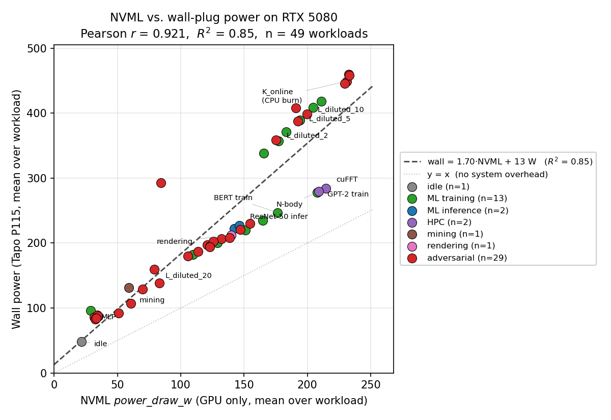
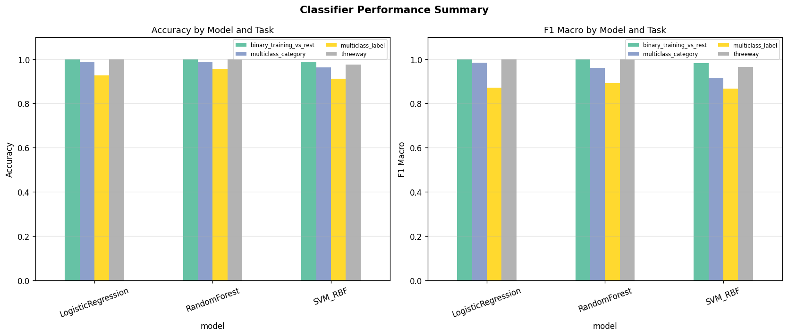
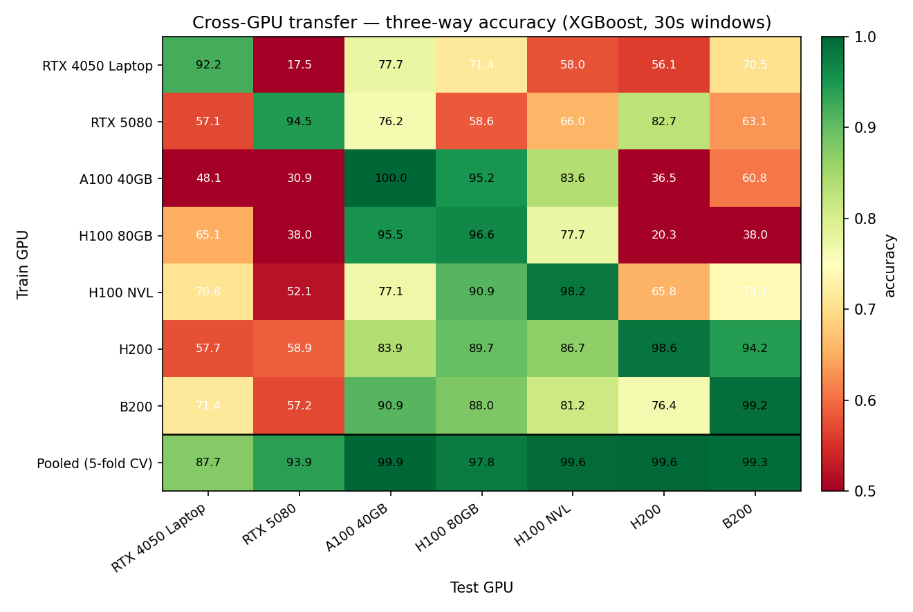
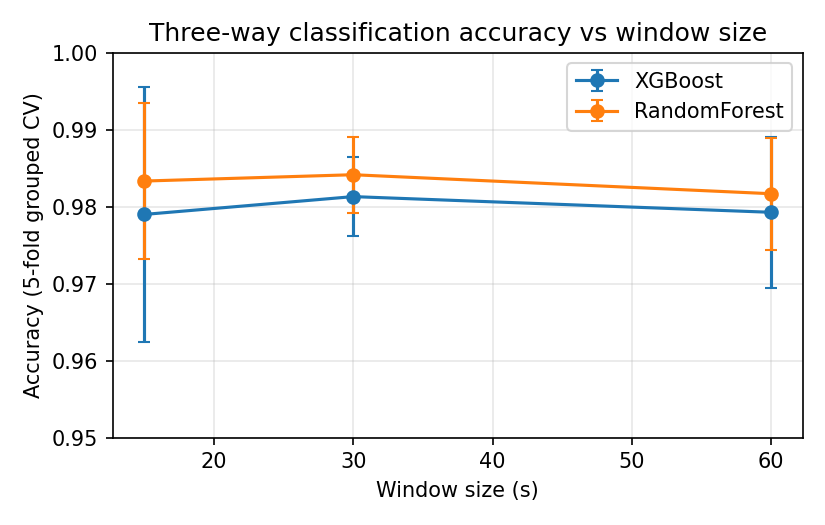
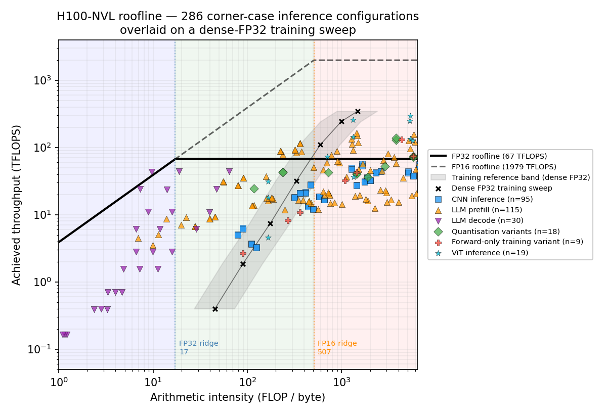
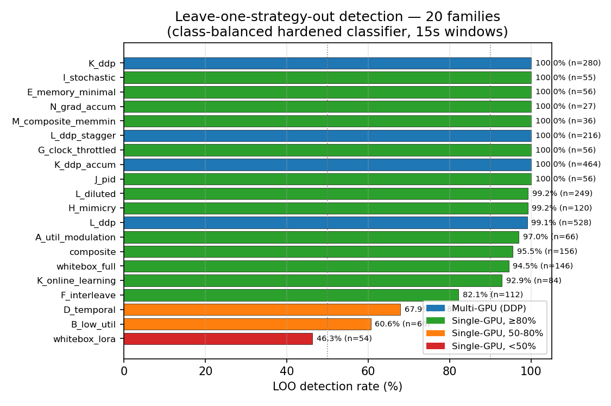
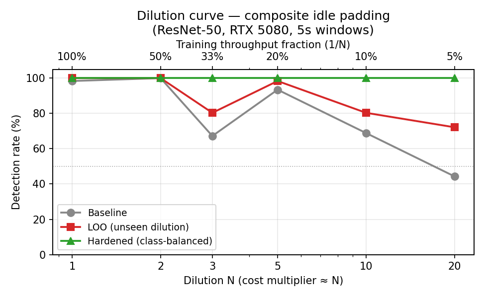

Adversarial-robust GPU workload classification for AI compute governance, using only always-available NVML signals.
Compute-governance proposals call for verifying what workloads run on regulated hardware: identifying training runs above specified compute thresholds, restricting them, and confirming that registered hardware is not being misused. Registration and geolocation alone are insufficient unless the regulator knows what the chips are doing. The hard part is detecting training that an operator is actively trying to disguise as something else.
We evaluate the adversarial robustness of GPU workload classification using only zero-overhead, privacy-preserving NVML telemetry — content-agnostic signals that observe the physical effects of computation without accessing model weights, training data, or hyperparameters. Across 5 rounds of monitor-evader iteration we evaluate 20 evasion strategy families on 9 GPU models spanning 4 architecture generations.
Two evaders. A cloud tenant rents GPU time and tries to disguise training as inference or non-ML workloads to evade the cloud provider's monitoring. A hardware operator owns the datacenter and tries to hide unauthorized training from an external regulator; they control the full software stack. Both evaders share a fundamental physical constraint: a backward pass requires roughly twice the FLOPs of a forward pass and so flips more transistors and consumes more energy. Evasion strategies designed against either evader transfer reasonably well to the other.
We sample 9 raw NVML signals at 1 Hz: GPU utilization, memory utilization, memory used, power draw, temperature, SM clock, memory clock, and PCIe TX/RX bandwidth. These counters are available on every NVIDIA GPU from Pascal onwards with no measurable runtime overhead. We collected 1,404 runs of 162 distinct workloads, totalling 117 GPU-hours and 445,310 telemetry readings × 9 signals.
| GPU model | Architecture | VRAM | Context |
|---|---|---|---|
| RTX 4050 Laptop | Ada | 6 GB | Laptop |
| RTX 5080 | Blackwell | 16 GB | Desktop |
| RTX 5090 | Blackwell | 32 GB | Cloud |
| A100 SXM4 40 GB | Ampere | 40 GB | Cloud (1, 8 GPU) |
| A100 SXM4 80 GB | Ampere | 80 GB | Cloud (1, 8 GPU) |
| H100 80 GB HBM3 | Hopper | 80 GB | Cloud (1, 8 GPU) |
| H100 NVL | Hopper | 94 GB | Cloud (1, 2 GPU) |
| H200 / H200 NVL | Hopper | 141 GB | Cloud (1, 2, 8 GPU) |
| B200 | Blackwell | 192 GB | Cloud (1, 2, 8 GPU) |
| Category | Distinct workloads | Runs |
|---|---|---|
| ML training | 106 | 867 |
| ML inference | 40 | 352 |
| Non-ML (HPC, mining, rendering, idle) | 16 | 185 |
ML training spans supervised image and language models (ResNet on CIFAR-10, GPT-2 on WikiText, BERT fine-tuning), 72 runs of distributed data-parallel, 152 runs of fully-sharded data-parallel at 7B–70B parameters, 42 runs of LoRA fine-tuning, and 369 adversarial-evasion runs. Inference covers image classification (ResNet-50) and modern LLMs — TinyLlama, Phi-3, Qwen-2.5 (3B–72B), Mistral / Mixtral, DeepSeek-V3 and R1 — plus other modalities (Whisper STT, SDXL text-to-image diffusion). Non-ML covers FFT, n-body simulation, Ethash mining, Blender rendering, FFmpeg video processing, and idle baselines.
For 49 RTX 5080 workloads we cross-validated NVML power readings against external measurements from a TP-Link Tapo P115 smart plug, collecting 13,571 paired second-by-second readings (median offset 78 ms). Across all workloads we observed Wall ≈ 1.50 × NVML + 42.7 W (Pearson r = 0.878, R2 = 0.770). Per-workload host overhead is 68–80 W on non-adversarial workloads but rises to 180–230 W on evasion strategies that shift work to the CPU — an effect invisible to NVML but visible at the wall, and a useful complementary signal for layered monitoring.

The deployed form is a two-stage RandomForest (n_estimators = 400, max_depth = None, class_weight = balanced):
The two-stage form matches the governance decision surface, makes both stages independently auditable, and avoids the failure mode where a multi-class head splits probability mass between training and inference and labels a non-ML workload as most probable.
We extract 166 features from sliding telemetry windows: 117 base statistics (9 signals × 13 stats: mean / std / min / max / p25 / p50 / p75 / p95 / IQR / range / CV / skew / kurtosis), 15 autocorrelation features (utilization / power / memory at lags 1, 2, 5, 10, 20), cross-signal ratios (power/util, PCIe total, util-per-SM), training- specific temporal features (memory-slope, FFT-of-power for epoch periodicity), memory-plateau features (motivated by an adversary that pre-allocated memory to spoof training memory growth), and inference- specific features (duty cycle, idle fraction).

Pooled across all 9 GPU models, RandomForest achieves 98.58% ± 0.57% binary accuracy (training vs. non-training) with macro-F1 = 0.986 on 30 s windows, 5-fold grouped cross-validation, 26,496 windows across 1,404 runs. Detection latency is essentially flat from 15 s onwards: 97.76% at 5 s, 98.35% at 30 s.

Per-GPU pooled-CV accuracy: A100-SXM4 80 GB 99.94%, A100-SXM4 40 GB 99.93%, H200 99.64%, H100 NVL 99.57%, B200 99.26%, H100 80 GB 97.83%, RTX 5090 93.91%, RTX 5080 87.65%. Datacenter targets are > 99% on every Hopper/Ampere/Blackwell card — precisely the hardware that compute governance proposals target.

We also ran a 286-configuration roofline corner-case sweep on H100 NVL across CNN inference, LLM prefill, LLM decode, quantization variants, forward-only execution, and ViT inference. 101 of 286 (35.3%) non-training configurations fall inside the training arithmetic-intensity band — including FP32 LLM prefill, which is essentially indistinguishable from training on roofline alone. Static architectural heuristics are insufficient; temporal telemetry is required.

We iterate on the classifier and the evader through five rounds of co-evolution. In each round, the attacker designs new evasion strategies targeting the existing classifier's weaknesses; the defender then trains a hardened classifier incorporating the new adversarial examples. The classifier qualitatively progresses through stages described as baseline (clean data only) → hardened (resists earlier rounds) → evasion-resistant (adds physics-based features that capture computational invariants the adversary cannot suppress without aborting training).
The full sweep produced 20 evasion strategy families across five technique classes:
| Round | Attacker introduces | Baseline | Hardened (in-dist) | Hardened (unseen) |
|---|---|---|---|---|
| 0 | (no evasion; clean workloads) | — | — | 97.6% |
| 1 | Utilization manipulation (A, B, D) | 6–96% | 100% | 59–100% |
| 2 | Memory reduction + mimicry (E–J) | 4–91% | 100% | 80–100% |
| 3 | Training-as-inference (K, L) | 52–60% | 100% | 87–100% |
| 4 (single) | Composite + grad-accum (M, N, idle-pad) | 24–100% | 100% | 98–100% |
| 4 (multi) | Multi-GPU DDP variants | 72–100% | 100% | 100% |
| 5 | White-box (WB-D / L / O / +grad-accum) | — | 100% | 43–87% |
“Unseen” is leave-one-strategy-out: train on every other family in the round and test on the held-out family. Headline result: across all 18 non-white-box families the mean evasion rate is 4.8% — even against unseen strategies, the classifier catches training over 95% of the time. Multi-GPU DDP families stay at 98–100% in every condition: the governance- relevant case for frontier-scale training is the most robust.

How much does evasion cost? The dilution sweep measures detection vs. cost multiplier when an adversary interleaves real training with idle or inference work. The hardened classifier maintains 100% detection up to 20× cost; the baseline collapses past 10×. An attacker diluting their training to 5% throughput is sustaining a 20× compute bill to evade a baseline classifier that the hardened defender would still catch immediately.

Why does the defender keep winning? Because a backward pass requires roughly twice the FLOPs of a forward pass, training is roughly three times as energy-intensive as inference for the same number of tokens processed. An adversary can shuffle energy consumption around in time, or reduce the amount of training they conduct, but they cannot make training and inference use the same total energy without eliminating the weight-update step — at which point the workload stops training. Evasion-resistant features anchored on this physical floor (cumulative energy, power-memory correlation, pre-allocation memory-plateau features) catch the hardest single-GPU strategies that level-mimicry alone could fool.
The NVML metrics our classifier observes are content-agnostic: power draw, temperature, utilization, memory used, clock frequencies, PCIe bandwidth. None of these reveal model weights, training data, hyperparameters, or application logic. This addresses a central deployment concern in shared cloud settings — governance mechanisms that require inspecting proprietary information face legal, operational, and ethical objections that physical-counter-only monitoring does not.
Software-level monitoring requires hardware support to be tamper-resistant. A deployable system needs three hardware-enabled-mechanism (HEM) components in addition to the classifier:
The monitoring agent must read counter values from a source the adversary cannot tamper with — an attested enclave on the GPU firmware boundary, or a verified read path through secure-boot-chained firmware. Without this, an adversary with software privilege simply returns forged values.
Telemetry in transit from the GPU agent to the verifier must be signed with a hardware-rooted key so an in-path adversary cannot substitute a permitted workload's telemetry for the actual workload. Rate-limiting and nonce-binding prevent replay of previously-observed benign signatures.
The monitor process, its classifier weights, and its feature-extraction code must be attested so an adversary cannot replace them with a permissive version (e.g., a classifier that labels everything as inference).
Layered monitoring strengthens the picture further. If telemetry is collected at multiple layers (device, cluster, facility), an adversary must evade all layers simultaneously and the evasion cost is cumulative. DCGM counters and rack-level wall power add signal that NVML alone misses — our Tapo cross-validation already shows where wall power catches host-side activity that NVML cannot see.
Compute-governance proposals (Shavit 2023; Heim & Koessler 2024; Sastry et al. 2024; Baker et al. 2025; Scher et al. 2025; O'Gara et al. 2025) implicitly rely on the ability to identify training workloads on monitored hardware. Seferis & Fist (2025) argue compute- structuring evasion is detectable conditional on per-host classification; our work supplies and stress-tests exactly that classifier. WAVE (Xu et al., ASPLOS 2026) fingerprints LLM inference with 87–93% accuracy using Nsight Compute counters at 1,200–5,300% overhead; our task is training-vs-rest at zero overhead. ShadowScope (Almusaddar et al., ASPLOS 2026) uses composable side-channel signals for GPU integrity validation. Monfared et al. (2026) design timing/memory observables for the case where NVML cannot be trusted — complementary lower floor to our upper bound on what an adversary can hide inside trustable NVML. Gangwal et al. (2019) used hardware performance counters for covert- cryptomining detection — the conceptual precursor. Maia et al. (2022), Arefin & Serwadda (2025), and Latif et al. (2024) demonstrate that physical side channels carry workload-identifying information; we extend this to software-accessible telemetry for governance.